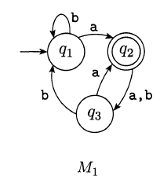
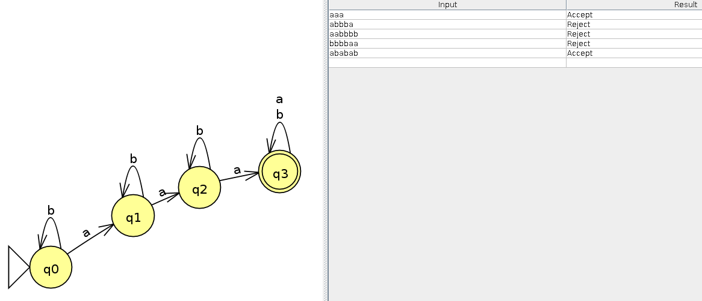
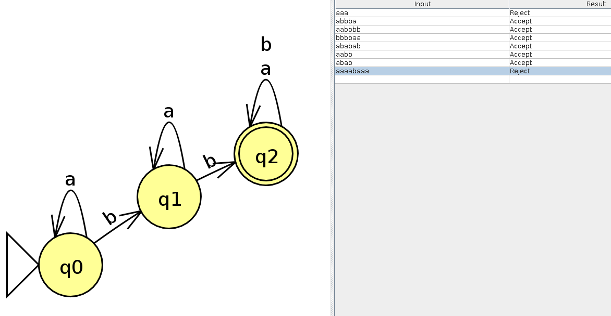
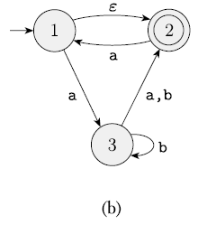
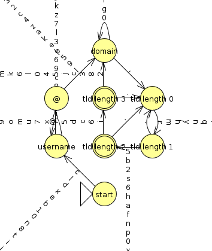
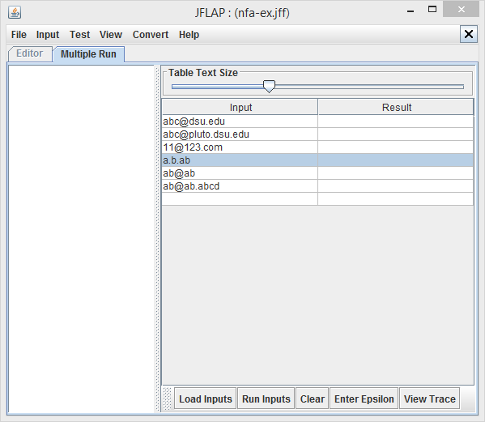
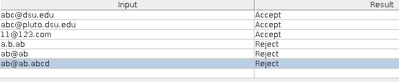

Author: Jon Craton
Date: February 13, 2018
Due Date: Tuesday, February 13, 2018, By Midnight
(Note: a few questions require you to construct DFAs. An easy way to draw a DFA is using the JFLAP software we posted in the class website. You can draw the DFAs in the JFLAP and then copy the screen to your homework.)
Answer the following questions:
a. If A has a elements and B has b elements, how many elements are in AxB?
The Cartesian product of A×B represents the set of ordered pairs (u,v) where u ∈ A and v ∈ B. Therefore:
|A × B| = |A|·|B|.
b. If C is a set with c elements, how many elements are in the power set of C?
A power set is the set of all subsets, including the set itself and the empty set. The lenght of the powerset of C can be represented as | P(C) | = 2^c^.
c. Let R={(1, 2), (2, 3), (2, 4)} is a relation on the set A = {1, 2, 3, 4}. What is R* (Reflexive and transitive closure)?
Start with R:
R = {(1, 2), (2, 3), (2, 4)}
Build the relexive closure
R∪{(a,a):a∈A} = {(1, 2), (2, 3), (2, 4), {1, 1}, {2, 2}, {3, 3}, {4, 4}}
Add the transitive items
R* = {(1, 2), (2, 3), (2, 4), {1, 1}, {2, 2}, {3, 3}, {4, 4}, (1, 3), (1, 4)}
The following are the state diagrams of a DFA (M1). Answer the following questions about each of these machines.

a. What is the start state?
q1
b. What is the set of accept states?
{q2}
c. What sequence of states does the machine go through on input aabb?
[q1, q2, q3, q1, q1]
d. Does the machine accept the string aabb?
No. This sequence stops at q1, which is not an accept state.
e. Does the machine accept the string ε?
No. The empty string ε would leave the machine in its start state. The start state is not an accept state.
Each of the following languages is the intersection of two simpler languages. In each part, construct DFAs for the simpler languages, then combine them using the construction discussed in footnote 3 (page 46) to give the state diagram of a DFA for the language given. In all parts, Σ = {a, b}.
a. {w| w has at least three a’s and at least two b’s}
From here on, I'll be using the Python class that I have built to work with DFAs from problem 9. The full source is available there.
DFA to recognize at least 3 a's:
a = DFA([
('0a', 'a', '1a'),
('0a', 'b', '0a'),
('1a', 'a', '2a'),
('1a', 'b', '1a'),
('2a', 'a', '>2a'),
('2a', 'b', '2a'),
('>2a', 'ab', '>2a'),
])
a.show()
a.test(
accept = ['abababa', 'aaa', 'baaab'],
reject = ['bbbbbab', 'aa', 'abbba']
)
Here's the same DFA in JFLAP just to demonstrate that I understand how to use JFLAP:

DFA to recognize at least 2 b's:
b = DFA([
('0b', 'b', '1b'),
('0b', 'a', '0b'),
('1b', 'b', '>1b'),
('1b', 'a', '1b'),
('>1b', 'ab', '>1b'),
])
b.show()
b.test(
accept = ['bb', 'bbaa', 'abbaba'],
reject = ['aaaaaba', 'b', 'aaab']
)
And again in JFLAP:

Combined DFA:
u = NFA.intersection(a,b)
# My insection implementation actually creates an NFA, so we need to convert it
u.to_dfa()
u.show()
u.test(
accept = ['aaabb', 'bbaaa', 'ababababab'],
reject = ['aabb', 'b', 'aaab', 'a']
)
b. {w| w has exactly two a’s and at least two b’s}
DFA to recognize exactly 2 a's:
a = DFA([
('0a', 'a', '1a'),
('0a', 'b', '0a'),
('1a', 'a', '2a'),
('1a', 'b', '1a'),
('2a', 'a', '>2a'),
('2a', 'b', '2a'),
('>2a', 'ab', '>2a'),
], F = ['2a'])
a.show()
a.test(
accept = ['aa', 'aba', 'bbbbabbba'],
reject = ['a', 'b', 'abababab', 'aaa']
)
Combined DFA (reusing the DFA to recognize at least 2 b's from part a):
u = NFA.intersection(a,b)
u.to_dfa()
u.show()
u.test(
accept = ['aabb', 'bbbbbabbabbb', 'ababbb'],
reject = ['aab', 'bba', 'bbaaaa', 'bbbbbaaaaa']
)
Give state diagrams of DFAs recognizing the following languages. In all parts, the alphabet is {0,1}.
a. {w| w begins with a 1 and ends with a 0}
a = DFA([
('q0', '1', 'q1'),
('q1', '1', 'q1'),
('q1', '0', 'q2'),
('q2', '1', 'q1'),
('q2', '0', 'q2'),
])
a.show()
a.test(
accept = ['10', '11010101010', '10000', '111111110'],
reject = ['01', '1', '101', '10101011']
)
b. {w| w contains at least three 1s}
a = DFA([
('0a', '1', '1a'),
('0a', '0', '0a'),
('1a', '1', '2a'),
('1a', '0', '1a'),
('2a', '1', '>2a'),
('2a', '0', '2a'),
('>2a', '10', '>2a'),
])
a.show()
a.test(
accept = ['1010101', '111', '011110'],
reject = ['0000010', '11', '10001']
)
Give state diagrams of NFAs with the specified number of states recognizing each of the following languages. In all parts, the alphabet is {0,1}.
a. The language {w| w ends with 00} with three states
a = NFA([
('q0', '1', 'q0'),
('q1', '1', 'q0'),
('q2', '1', 'q0'),
('q0', '0', 'q1'),
('q1', '0', 'q2'),
('q2', '0', 'q2'),
])
a.show()
a.test(
accept = ['00', '100', '101010000'],
reject = ['1010', '11', '10101011010']
)
This NFA is also a DFA.
Use the construction given in Theorem 1.39 to convert the following nondeterministic finite automata to equivalent deterministic finite automata.

First, let's build that NFA.
n = NFA([
('1', 'ε', '2'),
('2', 'a', '1'),
('1', 'a', '3'),
('3', 'b', '3'),
('3', 'ab', '2'),
])
n.show()
n.test(
accept = ['a', 'ab', 'aa', 'abbbbba', 'abbbb'],
reject = ['b', 'ba']
)
Now, let's run it through an ε-elimination algorithm.
n.ε_elimination()
n.show()
n.test(
accept = ['a', 'ab', 'aa', 'abbbbba', 'abbbb'],
reject = ['b', 'ba']
)
We can then convert to a DFA.
n.to_dfa()
n.show()
n.test(
accept = ['a', 'ab', 'aa', 'abbbbba', 'abbbb'],
reject = ['b', 'ba']
)
Give regular expressions generating the following languages. In all parts the alphabet is {0, 1}
a. {w | w has at least one 1}
0*1(0+1)*
r = NFA.from_re('0*1(0+1)*')
r.show()
r.test(['1','01','010','111000101001'],['','0','0000'])
r.to_dfa()
r.show()
r.test(['1','01','010','111000101001'],['','0','0000'])
b. {w | w starts and ends with same symbol}
r = NFA.from_re('(0(0+1)*0)+(1(0+1)*1)+0+1')
r.show()
r.test(['1','0','11','00','101','010','1010101','0111010'],['10','','01', '10101010'])
r.ε_elimination()
r.show()
r.test(['1','0','11','00','101','010','1010101','0111010'],['10','','01', '10101010'])
c. {w | |w| < 5}
r = NFA.from_re('(!+0+1)(!+0+1)(!+0+1)(!+0+1)')
r.ε_elimination()
r.show()
r.test(['1','0','11','00','101','010','1111','0000'],['11111','10101'])
d. {w | every 3rd position of w is 1}
r = NFA.from_re('(0+1)(0+1)1((0+1)(0+1)1)*')
r.ε_elimination()
r.show()
r.test(['001','111','001111','001001001001'],['','000','001000','00100100'])
Use the procedure described in Lemma 1.55 to convert the following regular expressions to nondeterministic finite automata.
a. (01)*000(01)*
r = NFA.from_re('(01)*000(01)*')
r.show()
r.ε_elimination()
r.show()
Problem 9 (20 points) A syntactically valid email address is made up of a user name followed by ‘@’ followed by a list of at least two domain names separated by ‘.’. Assume that user and domain names are made up of letters [a-z] and digits [0-9], and the main domain name, i.e., the last domain name, contains two or three characters. For example, the following three addresses are valid.
abc@dsu.edu
abc@pluto.dsu.edu
11@123.com
but the following three are invalid:
a.b.ab
ab@ab
ab@ab.abcd

<?xml version="1.0" encoding="UTF-8" standalone="no"?>
<structure><type>fa</type><automaton>
<state id="0" name="tld length 2"><x>0</x><y>0</y><final/></state>
<state id="1" name="domain"><x>0</x><y>0</y></state>
<state id="2" name="tld length 1"><x>0</x><y>0</y></state>
<state id="3" name="username"><x>0</x><y>0</y></state>
<state id="4" name="start"><x>0</x><y>0</y><initial/></state>
<state id="5" name="tld length 3"><x>0</x><y>0</y><final/></state>
<state id="6" name="tld length 0"><x>0</x><y>0</y></state>
<state id="7" name="@"><x>0</x><y>0</y></state>
<transition><from>3</from><to>3</to><read>i</read></transition>
<transition><from>6</from><to>2</to><read>r</read></transition>
<transition><from>1</from><to>1</to><read>0</read></transition>
<transition><from>3</from><to>3</to><read>h</read></transition>
<transition><from>3</from><to>3</to><read>r</read></transition>
<transition><from>6</from><to>2</to><read>m</read></transition>
<transition><from>2</from><to>0</to><read>5</read></transition>
<transition><from>6</from><to>2</to><read>h</read></transition>
<transition><from>4</from><to>3</to><read>c</read></transition>
<transition><from>7</from><to>1</to><read>l</read></transition>
<transition><from>4</from><to>3</to><read>l</read></transition>
<transition><from>4</from><to>3</to><read>d</read></transition>
<transition><from>1</from><to>1</to><read>g</read></transition>
<transition><from>1</from><to>1</to><read>r</read></transition>
<transition><from>6</from><to>2</to><read>y</read></transition>
<transition><from>6</from><to>2</to><read>n</read></transition>
<transition><from>1</from><to>1</to><read>q</read></transition>
<transition><from>0</from><to>5</to><read>i</read></transition>
<transition><from>1</from><to>1</to><read>k</read></transition>
<transition><from>7</from><to>1</to><read>9</read></transition>
<transition><from>7</from><to>1</to><read>5</read></transition>
<transition><from>2</from><to>0</to><read>b</read></transition>
<transition><from>3</from><to>3</to><read>8</read></transition>
<transition><from>2</from><to>0</to><read>2</read></transition>
<transition><from>0</from><to>5</to><read>6</read></transition>
<transition><from>2</from><to>0</to><read>s</read></transition>
<transition><from>6</from><to>2</to><read>q</read></transition>
<transition><from>4</from><to>3</to><read>x</read></transition>
<transition><from>5</from><to>1</to><read>2</read></transition>
<transition><from>2</from><to>0</to><read>6</read></transition>
<transition><from>4</from><to>3</to><read>e</read></transition>
<transition><from>6</from><to>2</to><read>f</read></transition>
<transition><from>5</from><to>1</to><read>8</read></transition>
<transition><from>4</from><to>3</to><read>b</read></transition>
<transition><from>1</from><to>1</to><read>n</read></transition>
<transition><from>2</from><to>0</to><read>h</read></transition>
<transition><from>5</from><to>1</to><read>3</read></transition>
<transition><from>0</from><to>5</to><read>c</read></transition>
<transition><from>3</from><to>3</to><read>c</read></transition>
<transition><from>7</from><to>1</to><read>p</read></transition>
<transition><from>6</from><to>2</to><read>2</read></transition>
<transition><from>4</from><to>3</to><read>1</read></transition>
<transition><from>3</from><to>3</to><read>9</read></transition>
<transition><from>3</from><to>3</to><read>6</read></transition>
<transition><from>3</from><to>3</to><read>v</read></transition>
<transition><from>2</from><to>0</to><read>a</read></transition>
<transition><from>2</from><to>6</to><read>.</read></transition>
<transition><from>3</from><to>3</to><read>3</read></transition>
<transition><from>0</from><to>5</to><read>d</read></transition>
<transition><from>4</from><to>3</to><read>0</read></transition>
<transition><from>7</from><to>1</to><read>e</read></transition>
<transition><from>6</from><to>2</to><read>s</read></transition>
<transition><from>7</from><to>1</to><read>k</read></transition>
<transition><from>0</from><to>5</to><read>5</read></transition>
<transition><from>5</from><to>6</to><read>.</read></transition>
<transition><from>3</from><to>3</to><read>l</read></transition>
<transition><from>3</from><to>3</to><read>7</read></transition>
<transition><from>3</from><to>3</to><read>z</read></transition>
<transition><from>5</from><to>1</to><read>c</read></transition>
<transition><from>4</from><to>3</to><read>n</read></transition>
<transition><from>7</from><to>1</to><read>a</read></transition>
<transition><from>0</from><to>5</to><read>r</read></transition>
<transition><from>1</from><to>1</to><read>8</read></transition>
<transition><from>7</from><to>1</to><read>z</read></transition>
<transition><from>2</from><to>0</to><read>f</read></transition>
<transition><from>2</from><to>0</to><read>n</read></transition>
<transition><from>2</from><to>0</to><read>p</read></transition>
<transition><from>0</from><to>5</to><read>x</read></transition>
<transition><from>5</from><to>1</to><read>j</read></transition>
<transition><from>3</from><to>3</to><read>k</read></transition>
<transition><from>7</from><to>1</to><read>4</read></transition>
<transition><from>1</from><to>1</to><read>v</read></transition>
<transition><from>3</from><to>7</to><read>@</read></transition>
<transition><from>0</from><to>5</to><read>7</read></transition>
<transition><from>6</from><to>2</to><read>a</read></transition>
<transition><from>7</from><to>1</to><read>c</read></transition>
<transition><from>2</from><to>0</to><read>0</read></transition>
<transition><from>5</from><to>1</to><read>5</read></transition>
<transition><from>7</from><to>1</to><read>2</read></transition>
<transition><from>0</from><to>5</to><read>u</read></transition>
<transition><from>7</from><to>1</to><read>3</read></transition>
<transition><from>5</from><to>1</to><read>4</read></transition>
<transition><from>1</from><to>6</to><read>.</read></transition>
<transition><from>7</from><to>1</to><read>o</read></transition>
<transition><from>2</from><to>0</to><read>x</read></transition>
<transition><from>4</from><to>3</to><read>8</read></transition>
<transition><from>3</from><to>3</to><read>y</read></transition>
<transition><from>5</from><to>1</to><read>0</read></transition>
<transition><from>4</from><to>3</to><read>t</read></transition>
<transition><from>5</from><to>1</to><read>l</read></transition>
<transition><from>2</from><to>0</to><read>j</read></transition>
<transition><from>4</from><to>3</to><read>i</read></transition>
<transition><from>1</from><to>1</to><read>m</read></transition>
<transition><from>2</from><to>0</to><read>m</read></transition>
<transition><from>5</from><to>1</to><read>6</read></transition>
<transition><from>0</from><to>5</to><read>m</read></transition>
<transition><from>0</from><to>5</to><read>o</read></transition>
<transition><from>4</from><to>3</to><read>j</read></transition>
<transition><from>1</from><to>1</to><read>b</read></transition>
<transition><from>2</from><to>0</to><read>o</read></transition>
<transition><from>3</from><to>3</to><read>1</read></transition>
<transition><from>0</from><to>5</to><read>9</read></transition>
<transition><from>1</from><to>1</to><read>2</read></transition>
<transition><from>0</from><to>5</to><read>y</read></transition>
<transition><from>5</from><to>1</to><read>k</read></transition>
<transition><from>7</from><to>1</to><read>0</read></transition>
<transition><from>2</from><to>0</to><read>c</read></transition>
<transition><from>3</from><to>3</to><read>o</read></transition>
<transition><from>0</from><to>5</to><read>4</read></transition>
<transition><from>6</from><to>2</to><read>8</read></transition>
<transition><from>2</from><to>0</to><read>4</read></transition>
<transition><from>3</from><to>3</to><read>5</read></transition>
<transition><from>1</from><to>1</to><read>h</read></transition>
<transition><from>3</from><to>3</to><read>f</read></transition>
<transition><from>0</from><to>5</to><read>l</read></transition>
<transition><from>6</from><to>2</to><read>5</read></transition>
<transition><from>3</from><to>3</to><read>4</read></transition>
<transition><from>2</from><to>0</to><read>z</read></transition>
<transition><from>6</from><to>2</to><read>w</read></transition>
<transition><from>5</from><to>1</to><read>m</read></transition>
<transition><from>5</from><to>1</to><read>x</read></transition>
<transition><from>0</from><to>5</to><read>v</read></transition>
<transition><from>0</from><to>5</to><read>f</read></transition>
<transition><from>1</from><to>1</to><read>e</read></transition>
<transition><from>1</from><to>1</to><read>i</read></transition>
<transition><from>4</from><to>3</to><read>u</read></transition>
<transition><from>2</from><to>0</to><read>1</read></transition>
<transition><from>5</from><to>1</to><read>h</read></transition>
<transition><from>5</from><to>1</to><read>s</read></transition>
<transition><from>1</from><to>1</to><read>u</read></transition>
<transition><from>7</from><to>1</to><read>m</read></transition>
<transition><from>5</from><to>1</to><read>w</read></transition>
<transition><from>1</from><to>1</to><read>6</read></transition>
<transition><from>7</from><to>1</to><read>r</read></transition>
<transition><from>4</from><to>3</to><read>h</read></transition>
<transition><from>6</from><to>2</to><read>c</read></transition>
<transition><from>4</from><to>3</to><read>a</read></transition>
<transition><from>5</from><to>1</to><read>t</read></transition>
<transition><from>2</from><to>0</to><read>8</read></transition>
<transition><from>7</from><to>1</to><read>x</read></transition>
<transition><from>7</from><to>1</to><read>s</read></transition>
<transition><from>4</from><to>3</to><read>o</read></transition>
<transition><from>0</from><to>5</to><read>z</read></transition>
<transition><from>3</from><to>3</to><read>x</read></transition>
<transition><from>5</from><to>1</to><read>d</read></transition>
<transition><from>1</from><to>1</to><read>w</read></transition>
<transition><from>7</from><to>1</to><read>t</read></transition>
<transition><from>5</from><to>1</to><read>f</read></transition>
<transition><from>2</from><to>0</to><read>w</read></transition>
<transition><from>2</from><to>0</to><read>d</read></transition>
<transition><from>6</from><to>2</to><read>p</read></transition>
<transition><from>1</from><to>1</to><read>y</read></transition>
<transition><from>5</from><to>1</to><read>r</read></transition>
<transition><from>0</from><to>5</to><read>k</read></transition>
<transition><from>3</from><to>3</to><read>a</read></transition>
<transition><from>4</from><to>3</to><read>2</read></transition>
<transition><from>5</from><to>1</to><read>g</read></transition>
<transition><from>4</from><to>3</to><read>p</read></transition>
<transition><from>1</from><to>1</to><read>s</read></transition>
<transition><from>0</from><to>5</to><read>1</read></transition>
<transition><from>4</from><to>3</to><read>7</read></transition>
<transition><from>6</from><to>2</to><read>e</read></transition>
<transition><from>1</from><to>1</to><read>j</read></transition>
<transition><from>2</from><to>0</to><read>9</read></transition>
<transition><from>5</from><to>1</to><read>u</read></transition>
<transition><from>6</from><to>2</to><read>0</read></transition>
<transition><from>7</from><to>1</to><read>q</read></transition>
<transition><from>0</from><to>5</to><read>a</read></transition>
<transition><from>0</from><to>5</to><read>3</read></transition>
<transition><from>0</from><to>5</to><read>8</read></transition>
<transition><from>7</from><to>1</to><read>g</read></transition>
<transition><from>7</from><to>1</to><read>1</read></transition>
<transition><from>4</from><to>3</to><read>z</read></transition>
<transition><from>2</from><to>0</to><read>l</read></transition>
<transition><from>1</from><to>1</to><read>o</read></transition>
<transition><from>5</from><to>1</to><read>v</read></transition>
<transition><from>7</from><to>1</to><read>n</read></transition>
<transition><from>4</from><to>3</to><read>g</read></transition>
<transition><from>1</from><to>1</to><read>7</read></transition>
<transition><from>4</from><to>3</to><read>k</read></transition>
<transition><from>1</from><to>1</to><read>x</read></transition>
<transition><from>1</from><to>1</to><read>c</read></transition>
<transition><from>6</from><to>2</to><read>3</read></transition>
<transition><from>4</from><to>3</to><read>y</read></transition>
<transition><from>1</from><to>1</to><read>4</read></transition>
<transition><from>4</from><to>3</to><read>9</read></transition>
<transition><from>5</from><to>1</to><read>a</read></transition>
<transition><from>4</from><to>3</to><read>v</read></transition>
<transition><from>6</from><to>2</to><read>9</read></transition>
<transition><from>3</from><to>3</to><read>w</read></transition>
<transition><from>5</from><to>1</to><read>o</read></transition>
<transition><from>1</from><to>1</to><read>z</read></transition>
<transition><from>7</from><to>1</to><read>i</read></transition>
<transition><from>7</from><to>1</to><read>d</read></transition>
<transition><from>4</from><to>3</to><read>6</read></transition>
<transition><from>7</from><to>1</to><read>y</read></transition>
<transition><from>5</from><to>1</to><read>e</read></transition>
<transition><from>2</from><to>0</to><read>i</read></transition>
<transition><from>7</from><to>1</to><read>b</read></transition>
<transition><from>4</from><to>3</to><read>q</read></transition>
<transition><from>6</from><to>2</to><read>l</read></transition>
<transition><from>2</from><to>0</to><read>t</read></transition>
<transition><from>1</from><to>1</to><read>t</read></transition>
<transition><from>2</from><to>0</to><read>u</read></transition>
<transition><from>0</from><to>5</to><read>g</read></transition>
<transition><from>3</from><to>3</to><read>m</read></transition>
<transition><from>4</from><to>3</to><read>s</read></transition>
<transition><from>6</from><to>2</to><read>o</read></transition>
<transition><from>4</from><to>3</to><read>w</read></transition>
<transition><from>7</from><to>1</to><read>8</read></transition>
<transition><from>6</from><to>2</to><read>v</read></transition>
<transition><from>6</from><to>2</to><read>7</read></transition>
<transition><from>4</from><to>3</to><read>5</read></transition>
<transition><from>6</from><to>2</to><read>k</read></transition>
<transition><from>7</from><to>1</to><read>h</read></transition>
<transition><from>0</from><to>6</to><read>.</read></transition>
<transition><from>3</from><to>3</to><read>t</read></transition>
<transition><from>0</from><to>5</to><read>h</read></transition>
<transition><from>5</from><to>1</to><read>7</read></transition>
<transition><from>2</from><to>0</to><read>r</read></transition>
<transition><from>7</from><to>1</to><read>f</read></transition>
<transition><from>7</from><to>1</to><read>v</read></transition>
<transition><from>4</from><to>3</to><read>f</read></transition>
<transition><from>7</from><to>1</to><read>j</read></transition>
<transition><from>3</from><to>3</to><read>j</read></transition>
<transition><from>0</from><to>5</to><read>t</read></transition>
<transition><from>6</from><to>2</to><read>i</read></transition>
<transition><from>3</from><to>3</to><read>e</read></transition>
<transition><from>0</from><to>5</to><read>b</read></transition>
<transition><from>6</from><to>2</to><read>t</read></transition>
<transition><from>3</from><to>3</to><read>0</read></transition>
<transition><from>1</from><to>1</to><read>9</read></transition>
<transition><from>2</from><to>0</to><read>g</read></transition>
<transition><from>5</from><to>1</to><read>q</read></transition>
<transition><from>0</from><to>5</to><read>j</read></transition>
<transition><from>5</from><to>1</to><read>y</read></transition>
<transition><from>0</from><to>5</to><read>p</read></transition>
<transition><from>2</from><to>0</to><read>q</read></transition>
<transition><from>2</from><to>0</to><read>k</read></transition>
<transition><from>3</from><to>3</to><read>n</read></transition>
<transition><from>1</from><to>1</to><read>l</read></transition>
<transition><from>4</from><to>3</to><read>4</read></transition>
<transition><from>0</from><to>5</to><read>e</read></transition>
<transition><from>5</from><to>1</to><read>1</read></transition>
<transition><from>5</from><to>1</to><read>n</read></transition>
<transition><from>0</from><to>5</to><read>0</read></transition>
<transition><from>4</from><to>3</to><read>m</read></transition>
<transition><from>2</from><to>0</to><read>7</read></transition>
<transition><from>0</from><to>5</to><read>n</read></transition>
<transition><from>3</from><to>3</to><read>q</read></transition>
<transition><from>2</from><to>0</to><read>y</read></transition>
<transition><from>4</from><to>3</to><read>r</read></transition>
<transition><from>6</from><to>2</to><read>6</read></transition>
<transition><from>5</from><to>1</to><read>p</read></transition>
<transition><from>3</from><to>3</to><read>g</read></transition>
<transition><from>5</from><to>1</to><read>9</read></transition>
<transition><from>5</from><to>1</to><read>i</read></transition>
<transition><from>5</from><to>1</to><read>b</read></transition>
<transition><from>6</from><to>2</to><read>g</read></transition>
<transition><from>0</from><to>5</to><read>q</read></transition>
<transition><from>2</from><to>0</to><read>3</read></transition>
<transition><from>1</from><to>1</to><read>a</read></transition>
<transition><from>1</from><to>1</to><read>3</read></transition>
<transition><from>0</from><to>5</to><read>w</read></transition>
<transition><from>2</from><to>0</to><read>e</read></transition>
<transition><from>7</from><to>1</to><read>6</read></transition>
<transition><from>1</from><to>1</to><read>1</read></transition>
<transition><from>1</from><to>1</to><read>5</read></transition>
<transition><from>7</from><to>1</to><read>u</read></transition>
<transition><from>5</from><to>1</to><read>z</read></transition>
<transition><from>6</from><to>2</to><read>4</read></transition>
<transition><from>6</from><to>2</to><read>z</read></transition>
<transition><from>3</from><to>3</to><read>s</read></transition>
<transition><from>4</from><to>3</to><read>3</read></transition>
<transition><from>6</from><to>2</to><read>d</read></transition>
<transition><from>6</from><to>2</to><read>1</read></transition>
<transition><from>3</from><to>3</to><read>2</read></transition>
<transition><from>1</from><to>1</to><read>d</read></transition>
<transition><from>1</from><to>1</to><read>f</read></transition>
<transition><from>3</from><to>3</to><read>b</read></transition>
<transition><from>7</from><to>1</to><read>w</read></transition>
<transition><from>1</from><to>1</to><read>p</read></transition>
<transition><from>6</from><to>2</to><read>u</read></transition>
<transition><from>0</from><to>5</to><read>s</read></transition>
<transition><from>6</from><to>2</to><read>b</read></transition>
<transition><from>3</from><to>3</to><read>d</read></transition>
<transition><from>3</from><to>3</to><read>u</read></transition>
<transition><from>0</from><to>5</to><read>2</read></transition>
<transition><from>2</from><to>0</to><read>v</read></transition>
<transition><from>6</from><to>2</to><read>x</read></transition>
<transition><from>3</from><to>3</to><read>p</read></transition>
<transition><from>6</from><to>2</to><read>j</read></transition>
<transition><from>7</from><to>1</to><read>7</read></transition>
</automaton></structure>


from string import ascii_lowercase as lower, digits
import graphviz
from IPython.display import display_html
class NFA:
"""
Implements a Finite Automaton
This technically implements an NFA, but it can used for DFAs as well
because a DFA is just a special of an NFA in terms of implementation
"""
def __init__(self, transitions, F=None, q0=None):
"""
The DFA is constructed by a list of transitions of the form:
[
(initial state, symbols, next state),
(initial state, symbols, next state),
...
]
The 5 formal attributes of the DFA 5-tuple are built from this.
An optional set of accept states may be provided. If omitted, the
last state listed is assumed to be the one and only accept state.
>>> dfa = NFA([('q0','b','q0'),('q0','a','q1')])
>>> dfa.accept('a')
True
>>> dfa.accept('bba')
True
>>> dfa.accept('b')
False
"""
# Set of states Q
self.Q = set([i[0] for i in transitions] + [i[2] for i in transitions])
# Symbol alphabet Σ
self.Σ = set(sum([[c for c in i[1] if c != 'ε'] for i in transitions], []))
# Transition function relating state and symbol to another state
# δ: Q × Σ → P(Q)
# This could just use a dict for DFAs, but that doesn't work for NFAs
# We store the set of all transitions, and implement a method δ
# to return the set of next states
self.transitions = [(i[0], char, i[2]) for i in set(transitions) for char in i[1]]
# Start state q0
self.q0 = q0 or transitions[0][0]
# Accept states F
self.F = F or set([transitions[-1][2]])
def δ(self, current, input=None):
"""
Transition functions δ
Returns a set of next states for a given current state and input
Epsilon transitions are returned only if explicitly requested by
calling without input.
"""
if input:
return sorted([i[2] for i in self.transitions if i[0] == current and i[1] == input])
else:
return sorted([i[2] for i in self.transitions if i[0] == current and i[1] == 'ε'])
def accept(self, input, state=None):
"""
Recursively check input for acceptance one symbol at a time
Returns True when halted at a state in F, and False otherwise
"""
# Begin at the start state if we aren't called with a state
state = state or self.q0
# Handle epsilon case
for n in self.δ(state,input=None):
a = self.accept(input, n)
if a:
return True
# Return our acceptance status when we're out of input
if len(input) == 0:
return state in self.F
# Get the next state or return our acceptance status if we're stuck
try:
next = self.δ(state,input[0])
except KeyError:
return state in self.F
# Recurse using all possible next states and the rest of our input
#
# It's worth noting that the search walk for an NFA take exponential
# time, while the conversion to DFA would include an exponential
# number of states. It's a time/memory tradeoff.
for n in next:
a = self.accept(input[1:], n)
# We accept if any path results in acceptance
if a:
return True
return False
def rename(self):
"""
Shortens state names
Some of the other methods concatenate state names for easy debugging,
and it can be helpful to shorten them back down.
>>> n = NFA([('big','a','names')])
>>> n.rename()
>>> n.transitions
[('0', 'a', '1')]
"""
ids = {s: str(i) for (i, s) in enumerate(sorted(list(self.Q)))}
self.transitions = [(ids[t[0]], t[1], ids[t[2]]) for t in self.transitions]
self.F = [ids[f] for f in self.F]
self.q0 = ids[self.q0]
self.Q = set([i[0] for i in self.transitions] + [i[2] for i in self.transitions])
def to_xml(self):
"""
Converts the DFA to xml as used by JFLAP.
I do not expect any bonus points for the readability of this method.
>>> ev = NFA.email_validator()
>>> len(ev.to_xml())
19339
"""
ids = {s: i for (i, s) in enumerate(self.Q)}
return '\n'.join(
['<?xml version="1.0" encoding="UTF-8" standalone="no"?>', '<structure><type>fa</type><automaton>'] +
[
'<state id="%d" name="%s"><x>0</x><y>0</y>%s</state>' %
( ids[name], name, '<initial/>' if name == self.q0 else '<final/>' if name in self.F else '' )
for name in self.Q
] + [
'<transition><from>%d</from><to>%d</to><read>%s</read></transition>' %
( ids[t[0]], ids[t[2]], t[1] )
for t in self.transitions
] +
['</automaton></structure>']
)
def to_graphviz(self):
""" Converts to a graphviz object for graphical display """
# http://ethanschoonover.com/solarized
BASE01 = '#586e75'
ORANGE = '#cb4b16'
VIOLET = '#6c71c4'
BGCOLOR = '#f5f5f5'
g = graphviz.Digraph(format='png', engine='dot', graph_attr={'rankdir': 'LR', 'packmode':'graph', 'bgcolor': BGCOLOR, 'overlap': 'scale', 'concentrate': 'true', 'splines':'true'})
for state in self.Q:
g.attr('node', shape='doublecircle' if state in self.F else 'circle')
g.attr('node', style='bold')
g.attr('node', color=VIOLET if state in self.F else ORANGE)
g.attr('node', fontcolor=BASE01)
g.node(state)
for e in self.transitions:
#g.attr('edge', style='bold')
g.attr('edge', color=BASE01)
g.attr('edge', fontcolor=BASE01)
g.edge(e[0], e[2], e[1])
# Add arrow to start state
g.attr('node', shape='none')
g.node("")
g.edge("", self.q0)
return g
def show(self):
display_html('<pre>' + self.to_graphviz()._repr_svg_() + '</pre>', raw=True)
def test(self, accept, reject):
"""
Tests the DFA against a list of strings expected to be accepted
and a list expected to be rejected.
Returns nothing, but raises an AssertionError on failure.
>>> dfa = NFA([('q0','a','q0'),('q0','b','q1'),('q1','ab','q1')])
>>> dfa.test(accept=['b','ba','ab'],reject=['a','aaa'])
"""
for a in accept:
assert self.accept(a), "Failed to accept %s for %s" % (a, sorted(list(self.transitions)))
for r in reject:
assert self.accept(r) == False, "Failed to reject %s for %s" % (r, sorted(list(self.transitions)))
def to_dfa(self):
"""
Convert NFA to DFA in place
>>> a = NFA([('0a','a','1a'),('0a','ba','0a'),('1a','ab','1a')])
>>> a.test(['aba','a'],['b','bbb'])
>>> a.to_dfa()
>>> a.test(['aba','a'],['b','bbb'])
"""
self.ε_elimination()
self.transitions = set(self.transitions)
for q in self.Q:
for i in self.Σ:
if len(self.δ(q,i)) > 1:
states = self.δ(q,i)
state = "{%s}" % ','.join(states)
# Add transitions pointing from substates
self.transitions.update(set([(state if t[0] in states else t[0],t[1],t[2]) for t in self.transitions]))
# Move transition targets to new state
self.transitions = set([(t[0],t[1],state if t[0] == q and t[1] == i else t[2]) for t in self.transitions])
# Adjust recursive transitions
self.transitions = set([(t[0],t[1],state if t[2] in states and t[0] == state else t[2]) for t in self.transitions])
# Copy accept state
for s in states:
if s in self.F:
self.F.add(state)
self.Q = set([i[0] for i in self.transitions] + [i[2] for i in self.transitions])
return self.to_dfa()
def ε_elimination(self):
"""
Removes any ε (empty string) transitions from the NFA
ε doesn't the power of an NFA, but can be a useful conveinience.
>>> n = NFA([(0,'a',1),(0,'ba',0),(1,'ab',1),(0,'ε',1),(1,'b',2)])
>>> d = NFA.ε_elimination(n)
>>> len(n.transitions)
3
>>> n.test(['b','aaab','ababababb'], ['a','ababababa','aaaaa'])
"""
while True:
εtransitions = [t for t in self.transitions if t[1] == 'ε']
if len(εtransitions) == 0:
return
for t in εtransitions:
us = t[0]
them = t[2]
# Remove the ε transition
self.transitions.remove(t)
# Move their transitions to ourself
self.transitions = set([(us if t[0] == them else t[0],t[1],t[2]) for t in self.transitions])
self.transitions = set([(t[0],t[1],us if t[2] == them else t[2]) for t in self.transitions])
# Inherit their other properties
self.q0 = us if self.q0 == them else self.q0
self.F = set(self.F)
if them in self.F:
self.F.remove(them)
self.F.add(us)
# Update set of states
self.Q = set([t[0] for t in self.transitions] + [t[2] for t in self.transitions])
break
@classmethod
def intersection(cls, a, b):
"""
Merges two FAs and return their intersection
In essense, this means both FAs must reach their accept state.
>>> a = NFA([('0a','a','1a'),('0a','b','0a'),('1a','ab','1a')])
>>> b = NFA([('0b','b','1b'),('0b','a','0b'),('1b','ab','1b')])
>>> u = NFA.intersection(a, b)
>>> u.test(accept=['bba','ba','ab'],reject=['aa','bb','a','b'])
"""
transitions = []
for at in a.transitions:
for bq in b.Q:
transitions.append(("{%s,%s}" % (at[0], bq), at[1], "{%s,%s}" % (at[2], bq)))
for bt in b.transitions:
for aq in a.Q:
transitions.append(("{%s,%s}" % (aq, bt[0]), bt[1], "{%s,%s}" % (aq, bt[2])))
F = set(["{%s,%s}" % (af, bf) for af in a.F for bf in b.F])
u = cls(transitions, F, "{%s,%s}" % (a.q0, b.q0))
# Prune reflexive transitions that add no information
u.transitions = [t for t in u.transitions
if t[0] != t[2] or # Non-reflexive transitions
len(u.δ(t[0], t[1])) == 1
]
return u
@classmethod
def union(cls, a, b):
"""
Merges two FAs and return their union
This means that either FA must reach its accept state
>>> a = NFA([('0a','a','1a'),('0a','b','0a'),('1a','ab','1a')])
>>> b = NFA([('0b','b','1b'),('0b','a','0b'),('1b','ab','1b')])
>>> u = NFA.union(a, b)
>>> u.test(accept=['a','b'],reject=[''])
"""
# Start with ε transitions to start states
transitions = [
('0','ε','a'+a.q0),
('0','ε','b'+b.q0),
]
# Add all transitions
transitions += [('a'+t[0],t[1],'a'+t[2]) for t in a.transitions]
transitions += [('b'+t[0],t[1],'b'+t[2]) for t in b.transitions]
F = ['a'+f for f in a.F]
F += ['b'+f for f in b.F]
return cls(transitions, F, q0='0')
@classmethod
def concat(cls, a, b):
"""
Merges two FAs and return their concatenation
>>> a = NFA([('0a','a','1a')])
>>> b = NFA([('0b','b','1b')])
>>> c = NFA.concat(a, b)
>>> c.test(accept=['ab'],reject=['a','b'])
>>> a = NFA([('0a','a','1a'),('1a','a','2a')])
>>> b = NFA([('0b','b','1b')])
>>> c = NFA.concat(a, b)
>>> c.test(accept=['aab'],reject=['a','b'])
>>> a = NFA([('0a','a','1a'),('0a','b','1b')],F=['1a','1b'])
>>> b = NFA([('0c','c','1c')])
>>> c = NFA.concat(a, b)
>>> c.test(accept=['ac','bc'],reject=['a','b','cc'])
"""
transitions = []
transitions += [('a'+t[0], t[1], 'a'+t[2]) for t in a.transitions]
F = []
# Every accept state in a becomes a copy of b
for f in a.F:
f = 'a' + f
transitions += [(f+'b'+t[0] if t[0] != b.q0 else f, t[1], f+'b'+t[2] if t[2] != b.q0 else f) for t in b.transitions]
# Accept states are accept states of b
F += [f+'b'+s for s in b.F]
return cls(transitions, F=F, q0='a'+a.q0)
@classmethod
def kleene(cls, nfa):
"""
Returns nfa wrapped in a Kleene star construction
>>> n = NFA.kleene(NFA([('0','a','1')]))
>>> n.test(['a','aa','aaa',''],['b'])
>>> n = NFA.kleene(NFA([('0','a','1'),('1','b','2')]))
>>> n.test(['ab','abab','abab',''],['b','a','aaba'])
"""
return cls([
('kq0','ε',nfa.q0),
('kq0','ε','kf'),
] + nfa.transitions +
[(f, 'ε', nfa.q0) for f in nfa.F] +
[(f, 'ε', 'kf') for f in nfa.F]
)
@classmethod
def from_re(cls, re):
"""
Builds an NFA instance from a regular expression
Regular expressions are of the form recognized by JFLAP
Some examples:
a+b+c = {a, b, c}
abc = {abc}
(!+a)bc = {bc, abc}
ab* = {a, ab, abb, abbb, ...}
(ab)* = (λ, ab, abab, ababab, ...)
(a+b)* = (λ, a, b, aa, ab, ba, bb, aaa, ...)
a+b* = (a, λ, b, bb, bbb, ...)
a+!* = (a, λ)
(a+!)* = (λ, a, aa, aaa, aaaa, ...)
While regular expressions represent a regular language, they are
themselves context-free, so they can't be processed using an NFA.
The RE is conceptualized as a string with the following grammar:
S → ExpOp
Exp → a
Exp → (a)
Op → o
Where a is a printable character not in o and o is one of:
- '*' is the Kleene star
- '+' is the union operator
- '!' is used to represent the empty string
- The empty string representing concatination
'(' and ')' are literal parenthesis.
The basic algorithm used to convert the RE to an NFA is Thompson's
construction.
The RE is an LL(1) grammar, so parsing is very straightforward and
only requires looking ahead 1 byte at a time.
>>> n = NFA.from_re('')
>>> n.test([''],['a'])
>>> n = NFA.from_re('a')
>>> n.test(['a'],['','aa'])
>>> n = NFA.from_re('ab')
>>> n.test(['ab'],['','abc','a'])
>>> n = NFA.from_re('a+b')
>>> n.test(['a', 'b'],['','abc', 'ab'])
>>> n = NFA.from_re('(a)b')
>>> n.test(['ab'],['','a', 'b'])
>>> n = NFA.from_re('(a)(b)')
>>> n.test(['ab'],['','a', 'b'])
>>> n = NFA.from_re('(a+b)c')
>>> n.test(['ac','bc'],['','a', 'b','aa'])
>>> n = NFA.from_re('(!+a)bc')
>>> n.test(['bc','abc'],['','a', 'b','aa','bbc'])
>>> n = NFA.from_re('a(b+c)d')
>>> n.test(['abd','acd'],['','a', 'b','abc'])
>>> n = NFA.from_re('a*')
>>> n.test(['','a','aaaaa'],['b'])
>>> n = NFA.from_re('a*b')
>>> n.test(['b','ab','aaaab'],['aaa','a'])
>>> n = NFA.from_re('(ab)*')
>>> n.test(['','ab','ababab'],['b','aab','aba'])
"""
def append_re(re, nfa=cls([('0','ε','1')], F=[])):
"""
Concatentates an RE to an NFA
"""
if len(re) == 0 or re[0] == ')':
return nfa
if len(re) == 1:
return cls([('0',re[0],'1')])
# Consume the next element. This may be a single char or an
# expression wrapped in parens
if re[0] == '(':
open = 0
i = 0
while True:
if re[i] == '(':
open += 1
if re[i] == ')':
open -= 1
i += 1
if open == 0 or i > len(re):
break
lhs = NFA.concat(nfa, cls.from_re(re[1:i-1]))
re = re[i-1:]
else:
lhs = cls.from_re(re[0] if re[0] != '!' else 'ε')
if len(re) > 1 and re[1] == '*':
return cls.concat(NFA.concat(nfa, cls.kleene(lhs)), cls.from_re(re[2:]))
elif len(re) > 1 and re[1] == '+':
return NFA.concat(nfa, NFA.union(lhs, cls.from_re(re[2:])))
else:
return NFA.concat(nfa, NFA.concat(lhs, cls.from_re(re[1:])))
n = append_re(re)
n.rename()
return n
@classmethod
def email_validator(cls):
"""
Builds a DFA instance that operates as a simple email address validator.
>>> ev = NFA.email_validator()
>>> ev.accept('abc@dsu.edu')
True
>>> ev.accept('abc@pluto.dsu.edu')
True
>>> ev.accept('11@123.com')
True
>>> ev.accept('a.b.ab')
False
>>> ev.accept('ab@ab')
False
>>> ev.accept('ab@ab.abcd')
False
"""
return cls([
('start', lower+digits, 'username'),
('username', lower+digits, 'username'),
('username', '@', '@'),
('@', lower+digits, 'domain'),
('domain', lower+digits, 'domain'),
('domain', '.', 'tld length 0'),
('tld length 0', lower+digits, 'tld length 1'),
('tld length 1', lower+digits, 'tld length 2'),
('tld length 1', '.', 'tld length 0'),
('tld length 2', lower+digits, 'tld length 3'),
('tld length 2', '.', 'tld length 0'),
('tld length 3', lower+digits, 'domain'),
('tld length 3', '.', 'tld length 0'),
], ['tld length 2', 'tld length 3'])
DFA = NFA